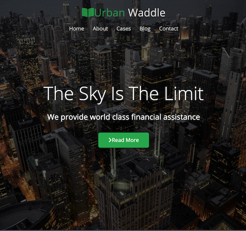

Kay S.
Home
About
Work
Contact
Project
Urban Waddle

Key features
1. static site
2. navbar & lightbox Effects.
3. responsive Media Queries
4. use Hero Section & Overlay
5. use a favicon
6. CSS flexbox
View Demo
View Source Code